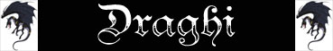
I draghi sono potenti e leggendarie creature alate simili a rettili. Sono conosciuti e temuti per il loro potere che si manifesta sia in una preponderante superiorità fisica che nel possesso di poteri speciali e capacità magiche. I draghi più anziani possono considerarsi tra le creature più potenti esistenti. I draghi sono la sfida più ardua in cui un avventuriero possa imbattersi. I draghi sono creature mitologiche, a volta descritti come la prima specie senziente comparsa al mondo, con un ciclo vitale di migliaia di anni. I draghi, per la loro stessa natura, sono forze epiche che hanno un ruolo importante nel mondo. Le azioni e le scelte dei draghi più potenti hanno la capacità di ripercuotersi sull'intero globo.
La categoria dei
"Draghi" è associabile ad un'ampia varietà di creature tra le quali è possibile
operare una prima e fondamentale distinzione:
Draghi Inferiori: Appartenenti alla
categoria dei draghi questi esseri, per nulla comparabile con i potenti e temuti
Draghi Puri, condividono solo parzialmente il patrimonio genetico con
quest'ultimi. Si tratta di creature assai diverse tra loro accumunate dalla
caratteristica che una volta divenuti adulti non acquistano forza e potere con
il passare degli anni (non applicandosi alle stesse le regole sulle categorie di
età).
Draghi Puri: Sono le creature che incarnano la categoria dei draghi per eccellenza, si tratta di esseri millenari caratterizzati da una peculiarità comune. Indipendentemente da ogni classificazione basata sulla diversità della specie, infatti, tutti i Draghi Puri sono accumunati dalla particolarità che, avanzando nel corso dell'età, costoro crescono notevolmente di forza e di dimensioni ed acquisiscono sempre maggiori poteri. I poteri di seguito indicati sono, quindi, comuni a tutti i Draghi Puri che hanno raggiunto una determinata età, indipendentemente dalla specie di appartenenza (a meno che, ovviamente, nella descrizione della singola creatura non sia specificato diversamente). Per tale motivo la più conosciuta ed utilizzata classificazione dei draghi li distingue, indipendentemente dalla specie, in base alla loro età come indicato nella seguente tabella.
Anche all'interno della
categoria dei Draghi Puri esistono molteplici classificazioni. Fra queste una
particolare classificazione distingue i draghi in base al colore delle loro
scaglie ed agli elementi ai quali queste creature mistiche sono legati. In base
a tale classificazione è possibile distinguere tra:
I draghi cromatici, che prendono tale nome dalle scaglie dei colori cromatici
principali, sono aggressivi predatori di indole principalmente malvagia.
I draghi metallici, che prendono tale norme dalle scaglie dei colori tipici dei
metalli, sono creature più rare e complesse che posseggono intenti più nobili.
| Categoria di Età | Età in anni | Classe Armatura | Dadi Vita | Bonus al Danno | Dragon Fear | Dragon Fear Radius | Dragon Fear
Ability Class |
| 1 Hatchling | 0-5 | +3 | -6 | +1 | None | None | None |
| 2 Very Young | 6-15 | +2 | -4 | +2 | None | None | None |
| 3 Young | 16-25 | +1 | -2 | +3 | None | None | None |
| 4 Juvenile | 26-50 | base | base | +4 | +12% | 18 metri | Moderate Special Ability |
| 5 Young Adult | 51-100 | -1 | +1 | +5 | +9% | 21 metri | Moderate Special Ability |
| 6 Adult | 101-200 | -2 | +2 | +6 | +6% | 24 metri | Moderate Special Ability |
| 7 Mature Adult | 201-400 | -3 | +3 | +7 | +3% | 27 metri | Superior Special Ability |
| 8 Old | 401-600 | -4 | +4 | +8 | 0 | 30 metri | Superior Special Ability |
| 9 Very Old | 601-800 | -5 | +5 | +9 | -3% | 36 metri | Superior Special Ability |
| 10 Venerable | 801-1000 | -6 | +6 | +10 | -6% | 42 metri | Powerful Special Ability |
| 11 Wyrm | 1001-1200 | -7 | +7 | +11 | -9% | 48 metri | Powerful Special Ability |
| 12 Great Wyrm | 1200+ | -8 | +8 | +12 | -12% | 54 metri | Powerful Special Ability |
POTERI COMUNI DEI DRAGHI PURI
DRAGON FEAR [Da Juvenile] : I draghi possono essere creature terrificanti. La loro forza ed il loro potenziale distruttivo sono in grado di terrorizzare anche i più esperti avversari. Quando un drago raggiunge una certa età (nella normalità dei casi quella di Juvenile) la sua mera vista può incutere terrore. Tutti coloro che si avvicinano ad una distanza pari od inferiore a quella indicata nella tabella (raggio di azione che aumenta con l'avanzamento di categoria di età del drago variando da 18 a 54 metri) da un drago che possiede questa capacità, infatti, devono superare un tiro salvezza su coraggio per non restare terrorizzati. Si tratta di un tiro salvezza non modificato dalla differenza di livello tra la vittima ed il drago. Questo tiro salvezza, però, subisce dei modificatori in base all'età del drago come indicato nella tabella dell'età. Se il tiro salvezza riesce la vittima non subirà alcun effetto e non dovrà effettuare alcun altro tiro salvezza per la vista del medesimo drago nelle seguenti 24 ore. Se il tiro salvezza fallisce la creatura sarà colta da un profondo senso di terrore e riceverà una penalità di -2 ai tiri per colpire ed il 20% di fallire nella concentrazione fino a che resterà entro una distanza dal drago pari al raggio di efficacia dell'aura di paura. La creatura avrà diritto a superare un nuovo tiro salvezza per la vista del medesimo drago solo una volta trascorse 24 ore dal fallimento del precedente tiro salvezza. Le creature immuni alla paura e le creature aventi livelli o dadi vita almeno pari a quelli del drago sono immuni agli effetti di questa abilità speciale.
IMMUNITA' AI PROIETTILI [Da Old] (Superior Special Ability) : Il corpo della creatura è resistente all'impatto con i comuni proiettili utilizzati dalle armi da fuoco e da tiro che si limiteranno a rimbalzare sul corpo della creatura. Proiettili incantati con incantamenti generali della scuola di incantamento almeno pari a+1 ed in ogni caso proiettili di grosse dimensioni (colpi di catapulta, balista, massi lanciati dai giganti) avranno comune effetto sul corpo della creatura.
|
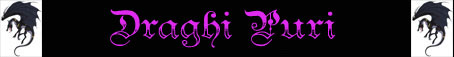 |
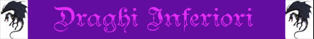 |
|
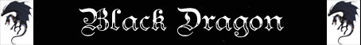 |
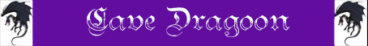 |
|
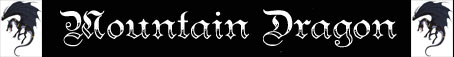 |
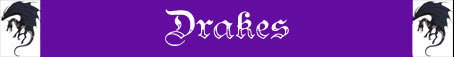 |
 |
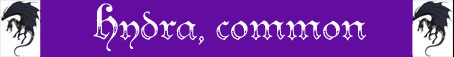 |
|
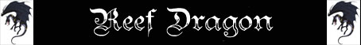 |
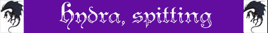 |
|
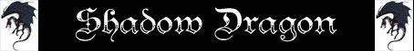 |
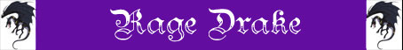 |
|
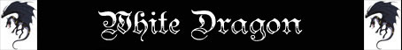 |
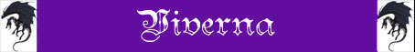 |